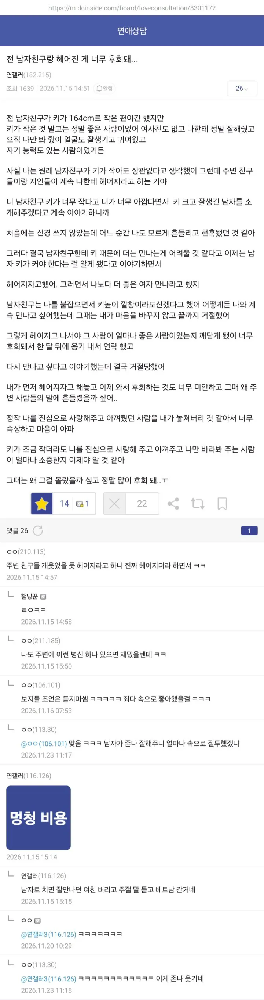

네이트판만봐도 저 똑같거나 유사한 주제로 글쓰면 달리는 댓글이
키작고 돈없으니까 님한테 잘해주는거다, 그거라도 해야지 결혼하는거라고
헤어지라고 종용하는 댓글 개많음ㅋㅋㅋㅋ
심지어 존잘남 소개도 안했나봄ㅋㅋㅋㅋ
저만큼 좋아했는데 재회각을 남자가 발로찬거보면
저 글쓴이가 헤어지자고 존나 긁었을듯

네이트판만봐도 저 똑같거나 유사한 주제로 글쓰면 달리는 댓글이
키작고 돈없으니까 님한테 잘해주는거다, 그거라도 해야지 결혼하는거라고
헤어지라고 종용하는 댓글 개많음ㅋㅋㅋㅋ
심지어 존잘남 소개도 안했나봄ㅋㅋㅋㅋ
저만큼 좋아했는데 재회각을 남자가 발로찬거보면
저 글쓴이가 헤어지자고 존나 긁었을듯
고생하셨겠네..베트남15년쉬운게아닌데
ㅠ
20대 다 보냈으면 책임져야지..
하노이? 롯데?
주재원 가면 하는일이 뭐임?
남자 조상님이 구해줬네 ㅋㅋㅋㅋ
키작은애한테 키작다고 헤어지자 이지랄하면 다시 못만나지
심지어 고작 한달만에 다시만나자 연락?
거기서 더 식을 듯
아무도 안주워가는 쓰레기를 왜 내가 도로 주워가겠음 ㅋㅋ
근데 주변 친구들 말 듣고 흔들려서 헤어지는 여자면 안만나는게 맞다 얘랑 혹시나 잘되서 같이 살게되어도 주변말에 흔들려서 뭔가 결정할 확률 높음. 남편이랑 둘이 상의해서 이미 합의본건데 또 어디서 줏어듣고와서 이렇다는데 저렇다는데 할 가능성도 있고.. 한마디로 줏대없는 여자 데리고 살기 힘들다
당사자들 끼리 대화를 해야지. 수준낮은 지 친구들끼리 답 다 정해놓고 통보 하는 여자들 은근 있음.
아니 근데 꼭 여자들은 꼭 주변 이야기 듣고 저런 걸 좀 크게 결정하더라고
친구도 예전에 소개팅하고 잘 만나다가 친구들 모임 만나고 와서 헤어지는 걸 몇 번 봤음..
물론 다들 지금 결혼해서 잘 살고 있습니다.
여자가 쓴거 아닌거같은데
저 댓글 중에 "보*들 조언 듣지 마셈"이 결혼 관련해서는 난 진짜 맞는말이라고봄. 주변에 멀쩡히 결혼 준비하던 커플을 여자 친구들이 옆에서 말로 부추겨서 박살내놓더라. 여자애들 상당수가 내가 못가지면 파괴해버릴거야라는 마인드 같다는 생각이 들더라. 현명한 여자애들은 결혼 다 결정할 거 다 결정하고 결혼날짜만 통보하는식이더라고...
진짜 제일 귀 얇아지는게 결혼할때인듯
인생에 단한번이라는 말이 참 독약이지 ㄷㄷ
ㅋㅋ 남자 운좋았네
여자들은 지들끼리 서로서로 둥가둥가 니가 아깝다 어쩐다 나쁘다 좋다 등등등 걸즈토크 하는게 문제임 귀도 얇고 줏대도 없고 문제는 나이가 들면 이게 더 심해짐. 자기에 대해 모르는 사람은 남의 말에 더 쉽게 감화됨.
여자들 주변말에 존나 흔들림. 남자도 귀 얇은사람들 많지만 유독 여자들은 매우매우 심히 많음
이유는 모르겠지만 추측해보면
여자는 어릴때부터 인맥형성(?) 사회화 형성이 관계형으로 되어있는 반면에 남성은 혼자-> 주변과의 마찰로 이뤄지는?? 표현이 좀 모호한데
크면서 사회화 형성에 있어서 남들에게 이정도선으로 깝치면 내가 처맞는다를 남자들이 자연스럽게 아는것처럼(여자들은 성인이되도 모르는애들 많음)
경험이 바탕된…? 그래서 스스로 어릴때부터 이건이거고 요건요거다 하는 느낌으로 커서 주변말에 흔들리는것보단 검증을 하는 단계가 남자는 존재하는것 같음
여자: 지인(조잘조잘)- 나(흔들림)- 현혹
남자: 지인(조잘조잘)- 나(흔들림)- 검증 - 1)맞네
- 2)아니네
이런느낌
물론 내 생각임. 남자들도 귀얇은사람 많긴하던데 뭔가 결은 다른거같어
저런사람 의외로 많더라
내주변에도 있었고 나도 전여친이 뭐 싸울때마다 내 친구는 이렇대 저렇게생각한대
이러니깐
니친구가 여기서 왜나오냐 둘사이 일인데 라고 말해도
말안통함
나중에 헤어질때되니깐 결국 지 친구들 말듣고 헤어지고싶어하길래 그래 그러자 했더니 본문처럼 몇달뒤에
연락와서 차단함
뭔가 ai 로 쓴 문체같냐 왜
모솔 키작은 놈이 이딴 주작글 쓰면서 자존감 채웠을 생각하니 애잔하다
주작글에 건다
아니야. 저 사람은 안헤어졌으면 뭘 해도 계속해서 머릿속에 남자 키로 가득 차있었을거야. 헤어지고나서 후회했지만 차라리 그게 더 나음. 그건 다른 사랑으로 잊혀질 수 있으니까. 하지만 안그러고 계속 만났다면 평생 괴로웠을거야.
키작남이 차이고 쓴 주작글 ㅋ
나도 이거 당했는데 난 키와는 관계없고
그때 조낸 힘들었는데 지금 만난 여자가 훨 났다 ㅋㅋ
연봉도 억대고 ㅋㅋ
니들도 할수 있어 화이팅ㅋ
와 나 20대를 거의 다 보낸 여친이랑 헤어지고 베트남 주재원으로 떠나서 15년 넘게 거기서 살았는데 ㅋㅋㅋㅋ
덕분에 결혼 늦게 해서 고생 중인데 후회는 안하지만 그때 여친이 생각날때가 종종 있어 ㅎㅎㅎ